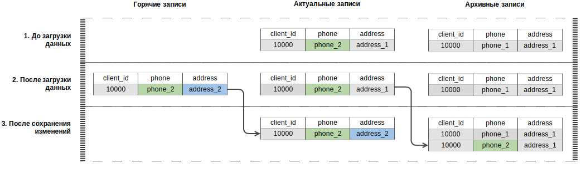

Физическая таблица — таблица СУБД хранилища, каждая запись которой описывает состояние объекта логической таблицы в определенный период времени. В зависимости от типа физической таблицы состояние объектов, хранящееся в ней, может быть новым (“горячим”), актуальным или архивным.
Все данные, загруженные в систему, до фиксации изменений считаются новым состоянием объектов и хранятся в виде горячих записей. При фиксации изменений система одномоментно обновляет состояние объектов, исключая возможность чтения грязных данных. Обновление происходит в следующем порядке:
На рисунке ниже показан пример обновления состояния объекта — набора данных одного клиента. В примере
рассматривается следующая ситуация: номер телефона клиента был ранее изменен со значения phone_1
на phone_2, это изменение было зафиксировано, и теперь загружаются данные того же клиента с новым адресом
(address_2).

Обновление данных клиента
В условиях, рассмотренных в примере, данные клиента обновляются в следующем порядке:
address_2) сохраняется в качестве горячей записи.address_1) переносится в категорию архивных,
запись с новым адресом (address_2) — в категорию актуальных, и горячая запись удаляется.
Обновление записей происходит одномоментно.